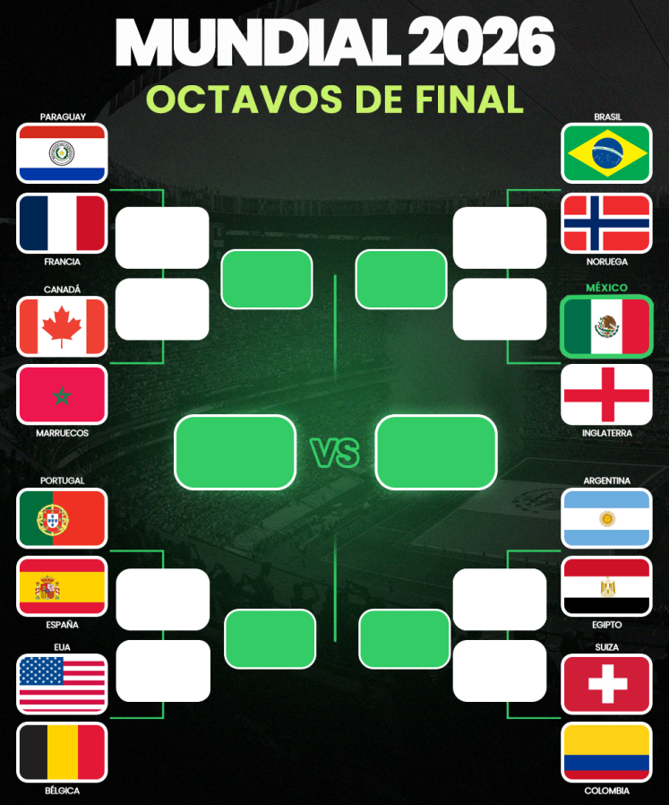

Camino a Cuartos de Final

Luego de la derrota de Paraguay, Canada, Brasil y Mexico ya se definieron 4/8 selecciones destinadas a pasar a cuartos de final (Francia, Marruecos y Noruega). Entre estos, ya se definieron 2 partidos para pasar a la semifinal: Francia v. Marruecos y Noruega v. Inglaterra.
Los 4 enfrentamientos de Octavos que quedan son:
Argentina v. Egipto, Portugal v. España, Estados Unidos v. Belgica Suiza v. Colombia.